Pictures for “After 6.111”
Nine pictures for the posts and articles, each in English and Russian, rendered at twice the display size. Numbers come from the same data as the report. Click a picture to open the full-size PNG.
Девять картинок к постам и статьям, на английском и русском, в двойном разрешении. Числа взяты из тех же данных, что и отчёт.
One FPGA lab is not a curriculum · Одна лабораторная по ПЛИС — ещё не программа
What a typical first course covers and the three gaps, with how many of the 111 entries document each skill.
Что даёт типичный первый курс, три пробела и у скольких из 111 участников документирован каждый навык.

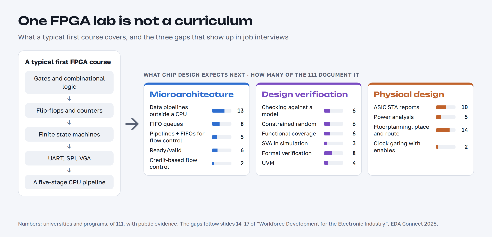
beyond_three_gaps_en.png 2400×1160
beyond_three_gaps_ru.png 2400×1160The 49-item checklist · Список из 49 пунктов
All seven areas and 49 items, with the number of entries that document each; items found nowhere are marked.
Все семь областей и 49 пунктов с числом участников, у которых пункт документирован; отмечены пункты, которых нет нигде.

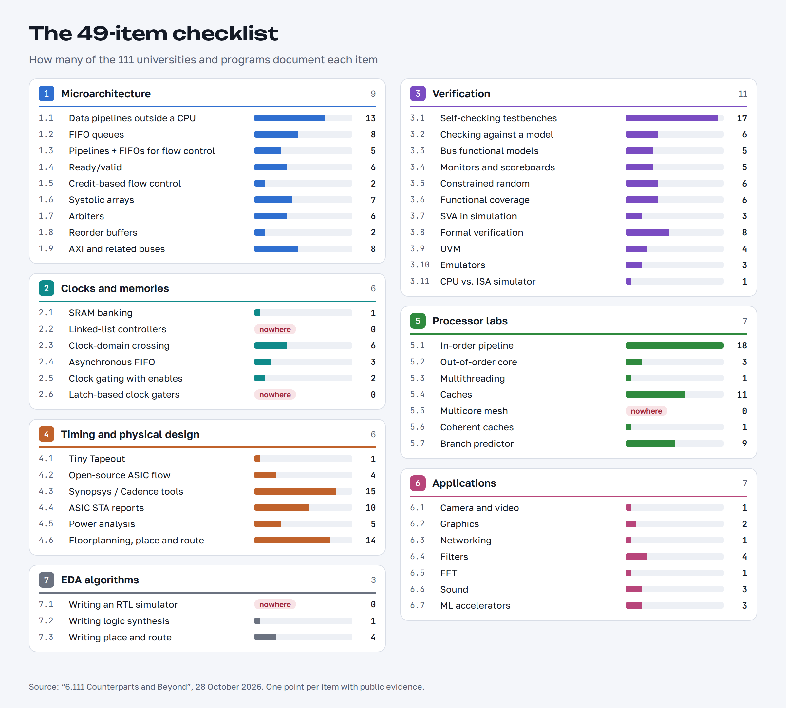
beyond_checklist_en.png 2400×2160
beyond_checklist_ru.png 2400×2160The ranking · Рейтинг
The 19 entries with 4 points or more, with flags and points by area.
19 участников с 4 баллами и больше, с флагами и баллами по областям.

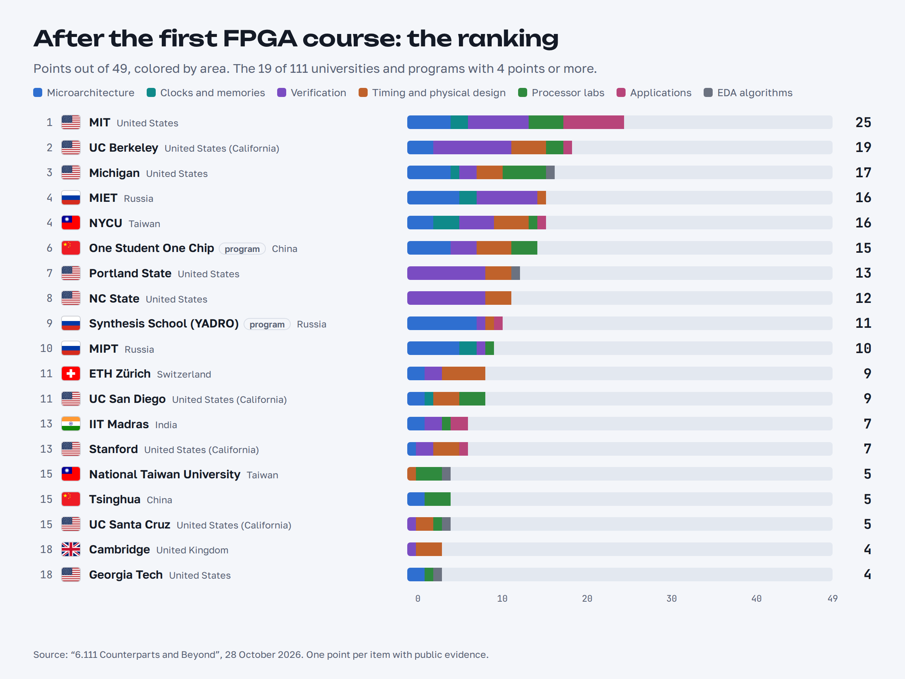
beyond_ranking_en.png 2400×1800
beyond_ranking_ru.png 2400×1800Top 10, square card · 10 лучших, квадратная карточка
A 1:1 card for Telegram, Instagram or a Habr post.
Квадратная карточка для Telegram, Instagram или поста на Habr.

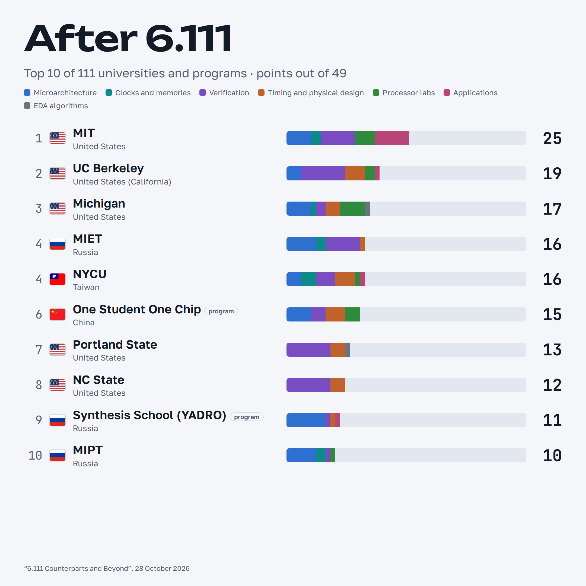
beyond_top10_square_en.png 2160×2160
beyond_top10_square_ru.png 2160×2160World map · Карта мира
Every entry on the map, sized and colored by points; labels for 9 points and more.
Все участники на карте, размер и цвет — баллы; подписаны те, у кого 9 баллов и больше.

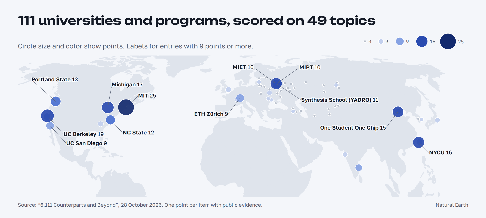
beyond_world_map_en.png 2400×1080
beyond_world_map_ru.png 2400×1080Former Soviet Union map · Карта бывшего СССР
Best score per city, Synthesis School cluster cities ringed, and a panel for Moscow and St Petersburg.
Лучший результат по городам, города с кластерами Школы синтеза обведены, отдельная панель для Москвы и Санкт-Петербурга.

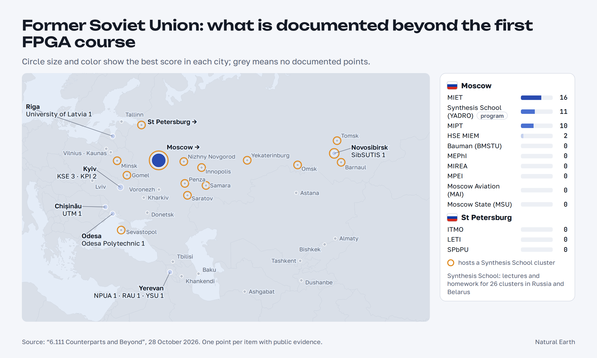
beyond_fsu_map_en.png 2400×1440
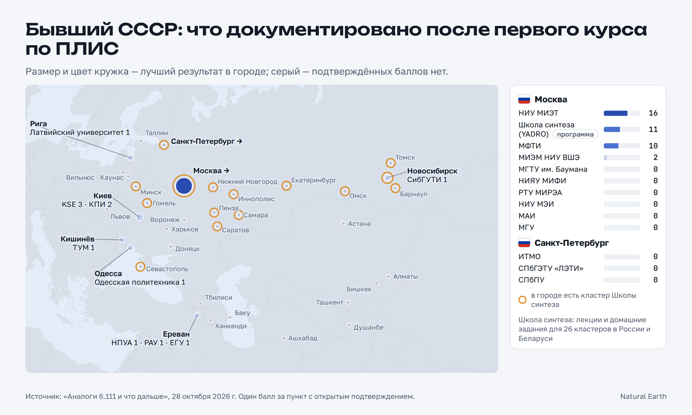
beyond_fsu_map_ru.png 2400×1440Who covers what · Кто что покрывает
The 24 entries with 3 points or more against all 49 items; empty columns show topics nobody documents.
24 участника с 3 баллами и больше против всех 49 пунктов; пустые столбцы — темы, которых нет ни у кого.

beyond_heatmap_en.png 2400×1652
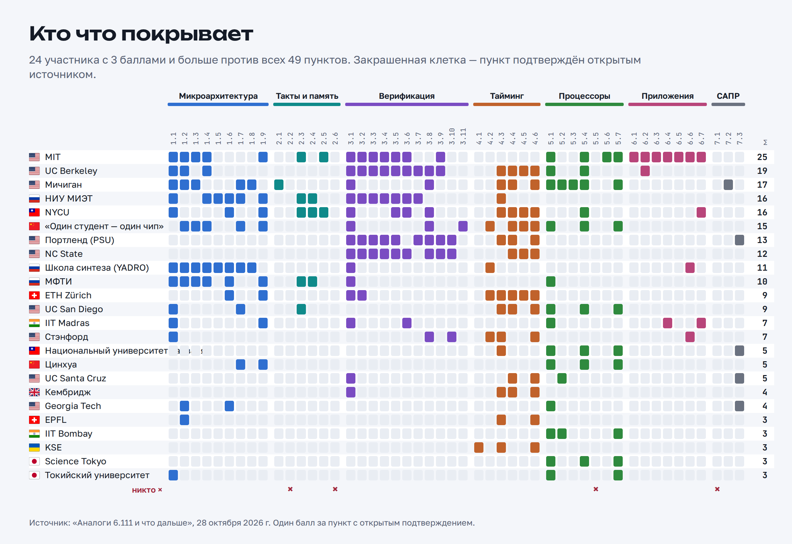
beyond_heatmap_ru.png 2400×1652Regions compared · Сравнение регионов
For each region, the best single entry and the number of items covered by at least one entry.
Для каждого региона — лучший участник и число пунктов, покрытых хотя бы одним участником.

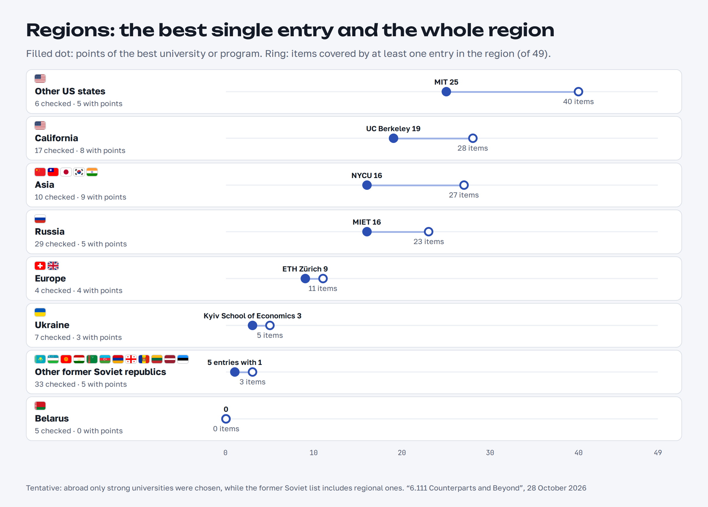
beyond_regions_en.png 2400×1720
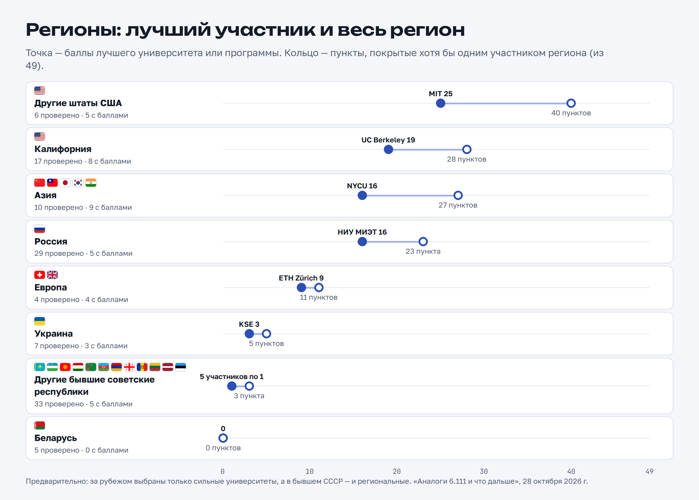
beyond_regions_ru.png 2400×1720Verification · Верификация
Who documents each of the 11 verification items, from self-checking testbenches to UVM, formal and emulation.
Кто документирует каждый из 11 пунктов верификации, от самопроверяющихся тестбенчей до UVM, формальной верификации и эмуляции.

beyond_verification_en.png 2400×1560
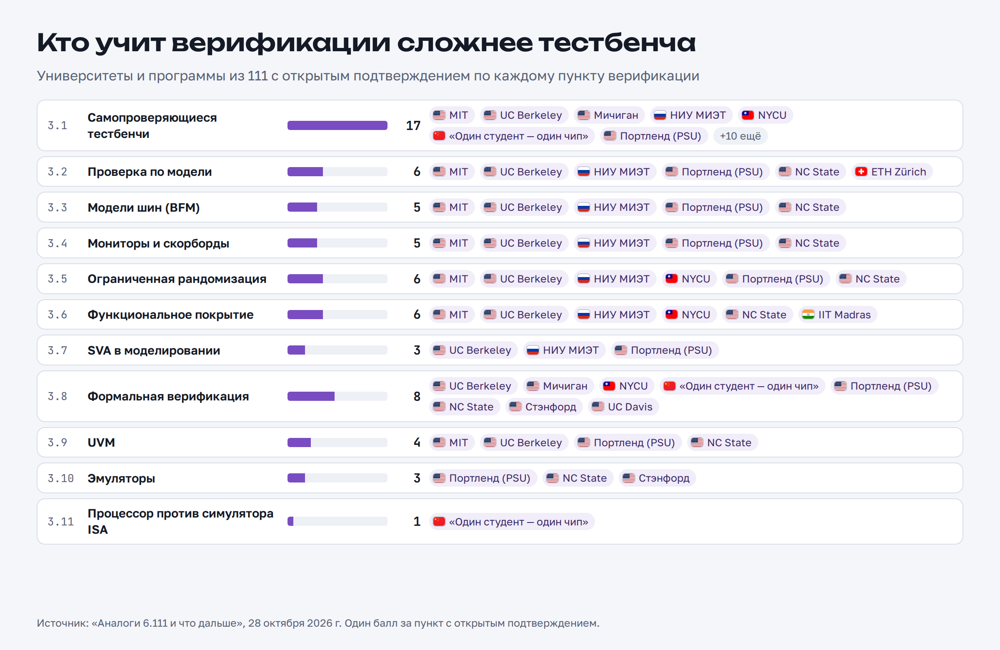
beyond_verification_ru.png 2400×1560